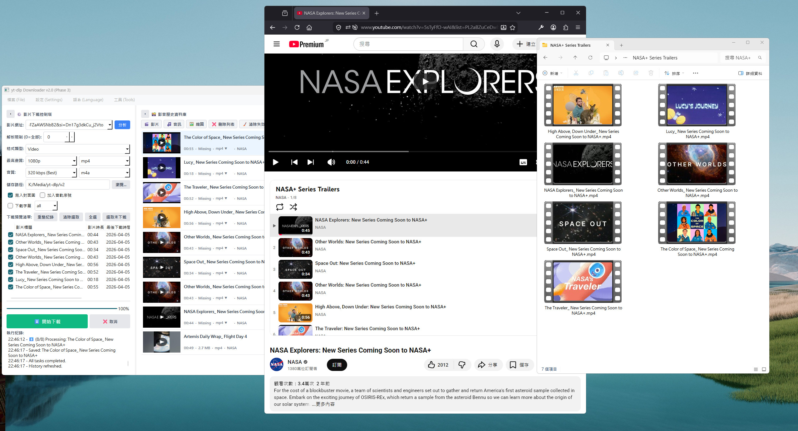

yt-dlp-gui
A modern, cross-platform GUI wrapper for the powerful yt-dlp tool.
Download videos effortlessly with a clean, user-friendly interface.

FileProsApp
Automated file organization tool based on Python.
Intelligently sort chaos into order with one click.

ChatBot Base in Dify
RAG Precision Data Integration.
Intelligent Chat Agent designed for smart interactions.

Brand Page Design
Modern aesthetic UI/UX implementation.
Responsive design for GunPowder & Personal Branding.